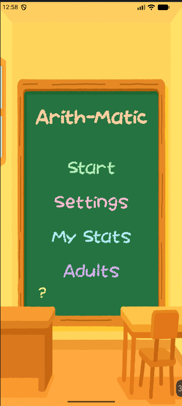
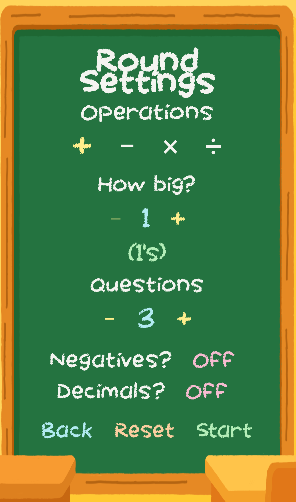
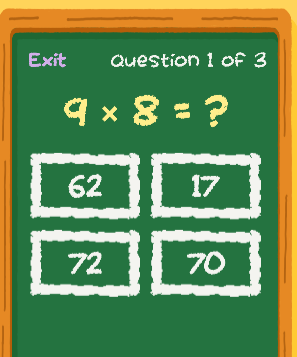

Multiple Operations
Choose What to Practice
Practice can be configured around addition, subtraction, multiplication, division, exponents, roots, remainders, percentages, and mixed-operation rounds as those systems are completed.
 Wise Raven Studios
Wise Raven Studios

Educational Android Application
Customizable arithmetic practice designed to help learners build confidence, fluency, and a stronger understanding of mathematics.
Project Overview
Arith-Matic is an educational practice application built to help learners improve their arithmetic skills through focused, repeatable practice.
Rather than forcing every learner through the same fixed set of questions, Arith-Matic allows a practice round to be shaped around the operations, number ranges, and difficulty settings that are appropriate for the person using it.
The project is being developed as a native Android application with a classroom-inspired visual style. Its interface is designed to feel welcoming and familiar while keeping the learner's attention on the problem currently in front of them.

Practice Tools
Arith-Matic is structured around configuration rather than a single predetermined lesson path.
Choose What to Practice
Practice can be configured around addition, subtraction, multiplication, division, exponents, roots, remainders, percentages, and mixed-operation rounds as those systems are completed.
Appropriate Challenge
Number size and other difficulty-related settings allow practice to grow with the learner instead of remaining permanently too easy or becoming discouragingly difficult.
Expand the Question Set
Optional modifiers can introduce negative numbers, decimal values, and broader operand ranges when a learner is ready for them.
Clear Beginning and End
Practice is divided into manageable rounds so learners can work toward a defined goal and review their performance afterward.
Useful Feedback
Results are intended to show correctness and completion timing without allowing a visible timer to create unnecessary pressure during each individual question.
Guided Configuration
Configuration tools are being designed so a parent, guardian, or educator can prepare an appropriate practice experience without needing technical knowledge.
Technology
Arith-Matic is being rebuilt with current Android development tools and a maintainable application structure.
Primary Programming Language
The application is written in Kotlin, allowing it to use modern Android language features, null safety, coroutines, and strong type support.
User Interface
The interface is built with Jetpack Compose using reusable composable boards, controls, text elements, and classroom scene components. While the typography is a font called Chalk-Tastic by Darrell Flood, the Art was made in Studio.
Separation of Responsibilities
Navigation, interface state, practice configuration, question generation, and result tracking are kept in separate parts of the application to reduce coupling and simplify testing.
Predictable UI State
Stateful screens use Android ViewModels and observable state so user choices survive recomposition and the interface reflects the application's current state. Architecture is mostly MVVM.
PracticeConfig
A dedicated immutable configuration model records the selected operations, modifiers, and difficulty settings used to generate each practice round. It is also stored for a user's personal analytics later.
Reliability
Question generators, validation rules, configuration behavior, and navigation logic are being structured so they can be tested independently from the visual interface.
Application Structure
Arith-Matic separates the application's visual presentation from its question-generation and practice logic.
Interface components are responsible for presenting information and collecting user choices. Configuration models describe the requested practice session. Question generators then use that configuration to create valid arithmetic questions.
This separation allows new operations and difficulty options to be added without requiring the entire interface or application flow to be rewritten.

Design Philosophy
The app is being designed around the learner's experience rather than around punishment, advertising, or artificial engagement.
Progress Without Pressure
Arith-Matic is not intended to make every learner compete against a global ranking. The primary goal is improvement relative to the learner's own previous understanding.
Supportive Feedback
Incorrect answers should identify where more practice is useful. They should not make a learner feel punished for attempting a difficult problem.
Focused Interface
The classroom theme gives the application personality without surrounding each question with unnecessary motion, clutter, or distracting reward systems.
Different Learners Need Different Practice
A nine-year-old practicing addition and an older learner reviewing decimals should not be forced into the same practice configuration.
Encouragement Without Manipulation
Game-like presentation can make practice more inviting, but it should support learning rather than encourage compulsive use or distract from the mathematical skill being developed.
Software That Can Keep Improving
The codebase is being rebuilt around reusable components, explicit models, documented behavior, and testable systems so the application can grow without becoming fragile.
Privacy
Arith-Matic is being designed around data minimization. The app should collect only the information required to provide its practice features.
The current design does not require a learner to create an account or provide a name, email address, birthday, precise location, contact list, or other unrelated personal information.
Practice settings and results are intended to remain on the device unless a future optional feature clearly explains why information would need to leave it.
Advertising and invasive behavioral tracking are not part of the application's current design. Any future analytics or online functionality would be documented before release and reviewed against the same privacy-first principles.
Current Design
Learners are intended to be able to begin practicing without registering for an online service.
Device Storage
Preferences and progress information are intended to remain under the control of the device owner.
No Behavioral Targeting
The app is not being designed to build advertising profiles from a child's learning behavior.
Accessibility
Accessibility is treated as part of the application's interface design rather than an optional addition at the end.
Clear Typography
Question text, answer choices, instructions, and settings are designed to remain legible across supported Android screen sizes.
Touch-Friendly Controls
Important controls are given clear spacing and practical touch targets rather than relying on tiny icons or precision tapping.
Understandable Feedback
Important states should not rely entirely on color. Text, structure, symbols, or other feedback can reinforce what has happened.
Source and Development
Arith-Matic is being developed as part of the Wise Raven Studios project collection. Its source repository contains the Android application, architecture, interface components, question generation systems, tests, and project documentation.
The current version is a substantial rebuild of an earlier implementation. The rebuild replaces outdated dependencies and an abandoned multiplatform direction with a focused, modern Android codebase.
Source availability, contribution rules, build instructions, and licensing information will be published through the project's repository.
Open the GitHub Repository
Development Status
The application is being rebuilt feature by feature, beginning with its navigation, reusable interface components, practice configuration, and question-generation foundation.
Wise Raven Studios
Arith-Matic is one part of a broader effort to create thoughtful software that improves lives and experiences.